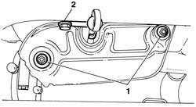
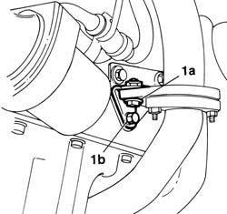
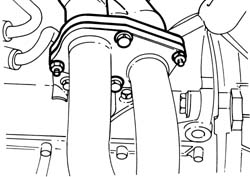
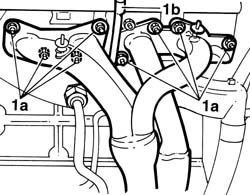
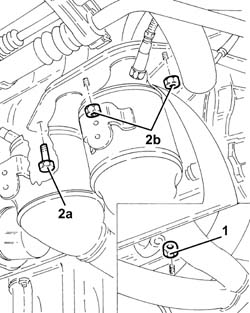
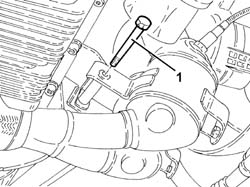
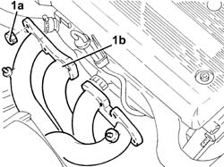
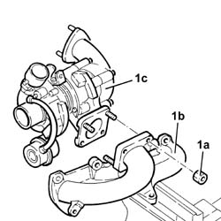

1072C12 exhaust manifold - r r
- Path
- Procedures > 10 ENGINE > 1072 INLET AND EXHAUST MANIFOLDS > 1072C exhaust manifolds > 1072C12 exhaust manifold - r r
- Kind
- repair procedure (removal / refitting; the operation number is the code)
- Applies to
- engines: 1.6 TS , 1.8 TS, 1.9 JTD 8v ; all production periods
- Interactive page
- https://sloeber94.github.io/elrnDB-a156/en/#/3237697
Applies to: engines: 1.6 TS , 1.8 TS; all production periods
 Removing
Removing
 Refitting
RefittingPlace the car on a ramp.
Disconnect the battery negative terminal.
 | Name | Connector |
|---|---|---|
- | Battery |
1. Unscrew the bolts securing the exhaust manifold heat shield and remove.
2. Undo the engine oil dipstick tube bolt.

Applies to: engines: 1.6 TS , 1.8 TS; all production periods
Applies to: engines: 1.6 TS , 1.8 TS; all production periods
1. Undo bolt (1a-1b) to release the exhaust manifold flange from its anchorage to the crankcase.

Applies to: engines: 1.6 TS , 1.8 TS; all production periods
1. Undo both bolts (1a) and both nuts (1b) that connect the exhaust manifold to the exhaust pipe and if necessary remove the exhaust pipe attachment to the engine (ref. op. 1076B50 exhaust pipe attachment to engine - r + r ).

Applies to: engines: 1.6 TS , 1.8 TS; all production periods
1. Unscrew the eight nuts (1a) securing the exhaust manifold to the cylinder head and withdraw from the studs. At the same time, move oil dipstick tube (1b).

Applies to: engines: 1.6 TS , 1.8 TS; all production periods
Refitting
RemovingPosition the exhaust manifold on its studs and tighten the eight nuts.
 | Fastening | Component | Ø | Value (daNm) |
|---|---|---|---|---|
- | Nut | EXHAUST MANIFOLD/S | M8 | 1.7 - 2.1 |
Applies to: engines: 1.6 TS , 1.8 TS; all production periods
Fit the exhaust pipe to the exhaust manifold and tighten both bolts and both nuts.
| Fastening | Component | Ø | Value (daNm) |
|---|---|---|---|---|
- | Bolt | EXHAUST MANIFOLD/S | M8 | 2.3 - 2.8 |
| Fastening | Component | Ø | Value (daNm) |
|---|---|---|---|---|
- | Nut | EXHAUST MANIFOLD/S | M8 | 2.3 - 2.8 |
Connect the exhaust manifold flange to the crankcase by tightening both bolts to the bracket.
Applies to: engines: 1.6 TS , 1.8 TS; all production periods
7055B54 under-engine guard - r r
Tighten the oil dipstick tube bolt.
| Fastening | Component | Ø | Value (daNm) |
|---|---|---|---|---|
- | Bolt | OIL LEVEL DIPSTICK PIPE | M10 | 4.6 - 6.6 |
Fit the heat shield to the exhaust manifold and tighten both bolts.
Connect the battery's negative terminal.
Applies to: engines: 1.6 TS , 1.8 TS; all production periods; only with equipment: Euro 3
Removing
RefittingPosition the vehicle on the ramp.
Ensure that the ignition key is in the OFF postition, then disconnect the battery negative terminal.
| Name | Connector |
|---|---|---|
- | Battery |
Proceed with the removal 1072C44 exhaust manifold heat shield on bulkhead - r+r .
Undo the bolt fixing the guide pipe for the engine oil dipstick.
Proceed with the removal 7055B54 under-engine guard - r r .
1. Undo the nuts securing the catalytic preconverter to the exhaust manifold.
2. Undo the bolt (2a) and the nut (2b) securing the catalytic preconverter to the exhaust manifold.

Applies to: engines: 1.6 TS , 1.8 TS; all production periods; only with equipment: Euro 3
1. Undo the bolt fixing the catalytic pre-converter to the mounting bracket on the crankcase.

Applies to: engines: 1.6 TS , 1.8 TS; all production periods; only with equipment: Euro 3
Lower the catalytic preconverter as far as necessary to release from the exhaust manifold.
1. Undo the nuts (1a) and remove the exhaust manifold (1b).

Applies to: engines: 1.6 TS , 1.8 TS; all production periods; only with equipment: Euro 3
Refitting
RemovingPlace the exhaust manifold back in its housing and fix it tightening the nuts to the recommended torque.
| Fastening | Component | Ø | Value (daNm) |
|---|---|---|---|---|
- | Nut | EXHAUST MANIFOLD/S | M8 | (Cylinder head side) 1.7 ÷ 2.1 |
Replace the catalytic preconverter so that it is connected to the exhaust manifold.
Tighten the bolt fixing the catalytic pre-converter to the mounting bracket on the crankcase.
Tighten the nuts fixing the catalytic preconverter to the exhaust manifold to the recommended torque.
| Fastening | Component | Ø | Value (daNm) |
|---|---|---|---|---|
- | Bolt | CATALYTIC PRE-CONVERTER | M8 | (Exhaust manifold side) 2.5 ÷ 3.1 |
| Fastening | Component | Ø | Value (daNm) |
|---|---|---|---|---|
- | Nut | CATALYTIC PRE-CONVERTER | M8 | (Exhaust manifold side) 2.5 ÷ 3.1 |
Proceed with the refitting 7055B54 under-engine guard - r r .
Tighten the bolt fixing the engine oil dipstick guide pipe.
Proceed with the refitting 1072C44 exhaust manifold heat shield on bulkhead - r+r .
Connect the battery terminal (-).
Remove the car from the ramp.
Applies to: engines: 1.9 JTD 8v ; all production periods
Removing
Refitting1064A19 TURBOCHARGER - EXHAUST MANIFOLD - EXHAUST PIPE CONNECTING HOSE - R.R.
Position the turbocharger assembly in a vice.
1. Unscrew nuts (1a) and remove exhaust manifold (1b) from turbocharger (1c).

Applies to: engines: 1.9 JTD 8v ; all production periods
Refitting
RemovingFit the exhaust manifold and fix it to the turbocharger, tightening the nuts to torque.
| Fastening | Component | Ø | Value (daNm) |
|---|---|---|---|---|
- | Nut | EXHAUST MANIFOLD/S | M8 | 2.1 - 2.6 |
Remove the turbocharger assembly from the vice.
1064A19 TURBOCHARGER - EXHAUST MANIFOLD - EXHAUST PIPE CONNECTING HOSE - R.R.
Topics linked from this page (5)
- 1064A19 TURBOCHARGER - EXHAUST MANIFOLD - EXHAUST PIPE CONNECTING HOSE - R.R.
- 1072C44 exhaust manifold heat shield on bulkhead - r+r
- 1076B50 exhaust pipe attachment to engine - r + r
- 7055B54 under-engine guard - r r
- A1B Battery ( BATTERY NEGATIVE )